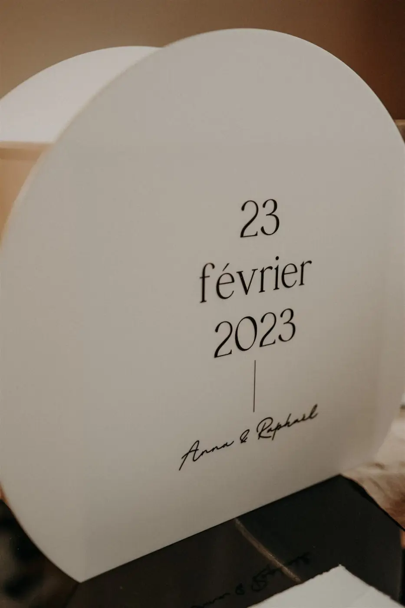
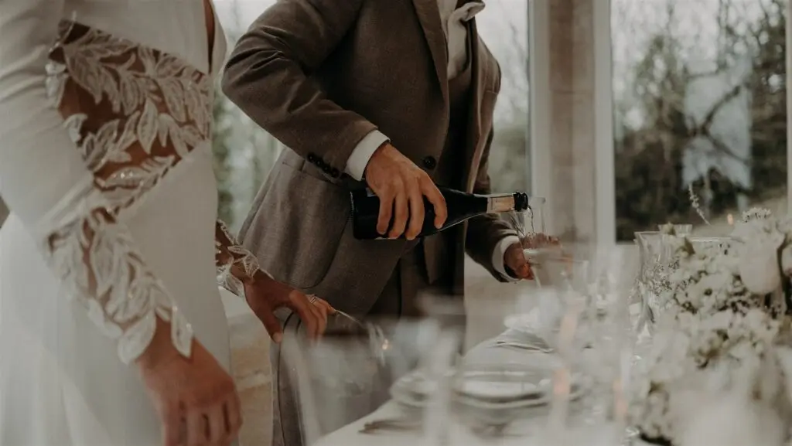
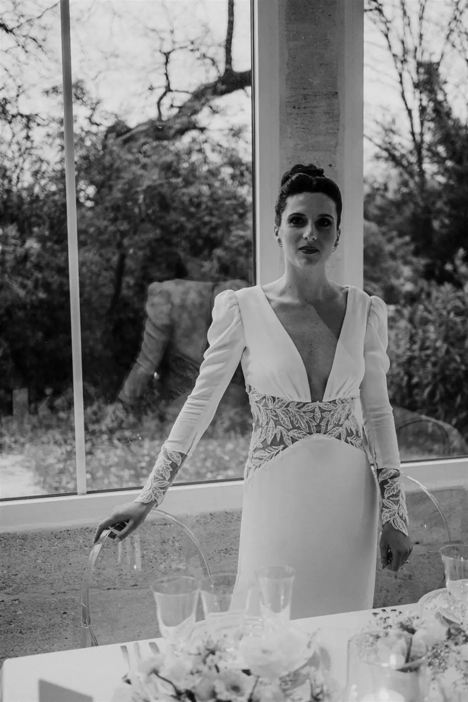
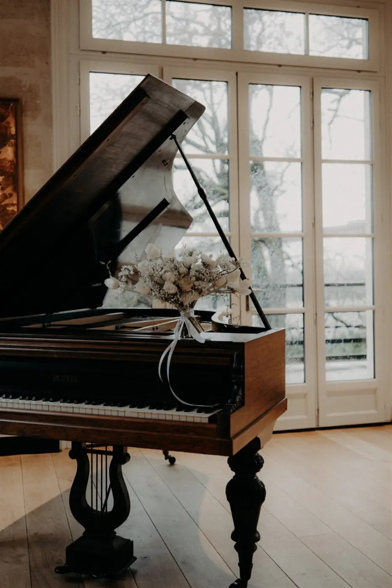
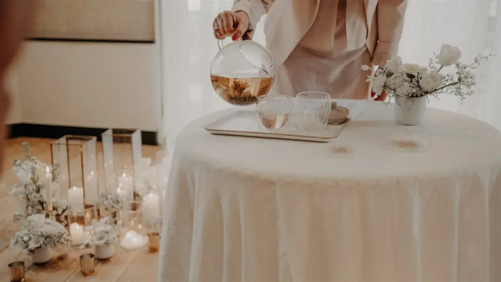
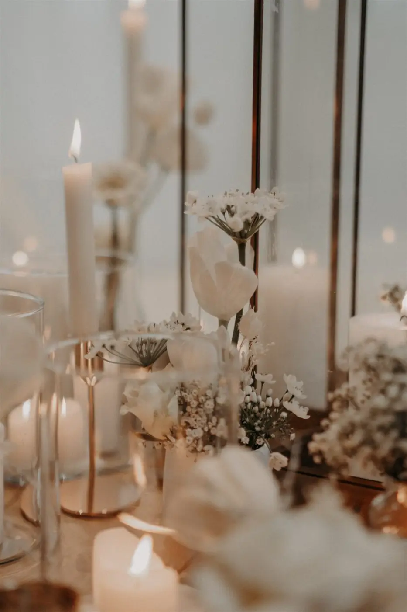

Colours, materials, finishes... details matter at your wedding!
The visual effect that suits you!
As a wedding designer, also known as a wedding decorator, I am a specialist professional who directs every visual aspect of a wedding to create a spectacular, memorable set design worthy of the couple's dream. I also coordinate all the related technical and aesthetic aspects.
Set design by a wedding designer
My work as a wedding designer is to create an overall vision of the wedding's aesthetic, finding the right balance with the difficulties and technical constraints that may affect the planned layout.
I then turn the couple's vision into a breathtaking reality that reflects them! This requires a briefing in close collaboration with the couple to understand their tastes, their style and their expectations. Based on all this information, I can design the wedding's entire set design, from the decor and accessories to the lighting, flowers and furniture. Couples from Bordeaux and the surrounding region will also receive a complete project with a budget for the whole decor, along with a moodboard to help them picture every element. The aim is to create a coherent, unique atmosphere.
- A harmonious, pure wedding

I am also responsible for selecting, buying, making and installing every decorative element on your big day. My role is to help the couple make this very special day a warm, festive event full of love.
Through my services, I take care of the full coordination of your wedding right up to the big day, making it the most important and most beautiful day of your life!
Don't wait any longer: get in touch by email or phone so we can talk about your wishes and create unique moments full of magic, brimming with joie de vivre and happiness.













Meeting Alexandra brought us calm and peace of mind. Alexandra understood what we had in mind and brought it to life. Her artistic side made our wedding magical, and her professionalism let us enjoy our guests and our day with complete confidence. Alexandra, thank you for everything!
Anna & Raphaël
Lovely Day Event offers several services
Wedding planning
I step in at every stage of your preparations and guide you through your choices, bringing ideas and suggestions so that your wedding looks like no one but you.
Wedding design
Creative and passionate, I am a certified Wedding Designer and I create a scenographic atmosphere that matches the theme of your wedding.
On-the-day coordination
I will be the conductor of your day, managing the suppliers, the set-up of your decor and the smooth running of this beautiful day.